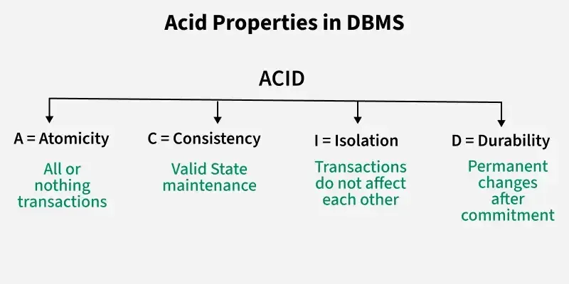

ACRON Methodology Part-7
فاز 6: Order Domain
کالبدشکافی معماری سفارشات (تفاوت Cart و Order چیست؟)
قبل از کدنویسی، باید یک مفهوم حیاتی در سیستمهای مالی و فروشگاهی را درک کنیم: «تغییرپذیری در برابر تغییرناپذیری» (Mutable vs. Immutable).
- سبد خرید (Cart): یک موجودیت موقت و تغییرپذیر است. کاربر میتواند امروز یک لپتاپ به سبدش اضافه کند، فردا قیمت لپتاپ در سایت تغییر کند و وقتی کاربر به سبدش نگاه میکند، قیمت جدید را میبیند.
- سفارش (Order): یک اسنپشات (عکسِ لحظهای) از تاریخ است و کاملاً تغییرناپذیر است. وقتی کاربر دکمه پرداخت را میزند و سفارش ثبت میشود، قیمت آن کالا در آن ثانیه، باید برای همیشه در دیتابیس ثبت (فریز) شود. اگر یک سال بعد قیمت لپتاپ ۳ برابر شد، فاکتور کاربر (Order) نباید تغییر کند؛ او باید دقیقاً همان مبلغی را ببیند که در زمان خرید پرداخت کرده است.
به همین دلیل است که ما نمیتوانیم فقط به جدول Product متصل بمانیم، بلکه باید فیلدی به نام unit_price (قیمت واحد) را در جدول OrderItem کپی و ذخیره کنیم.
1- فایلconfig/settings/base.pyرا باز کنید و اپلیکیشنordersرا از کامنت خارج کنید:INSTALLED_APPS = [ # ... 'apps.carts', 'apps.orders', # این خط از کامنت خارج شود ]
2- فایلapps/orders/models.pyرا باز کنید و کدهای مهندسیشدهی زیر را بنویسید:import uuid from django.db import models from apps.customers.models import Customer from apps.products.models import Product class Order(models.Model): # ۱. تعریف وضعیتهای مختلف یک سفارش با استفاده از TextChoices class OrderStatus(models.TextChoices): PENDING = 'P', 'در انتظار پرداخت' COMPLETED = 'C', 'پرداخت موفق' CANCELED = 'X', 'لغو شده' # ۲. شناسه یکتا و غیرقابل حدس برای پیگیری سفارش id = models.UUIDField(primary_key=True, default=uuid.uuid4, editable=False) # ۳. ارتباط با مشتری (سفارش برخلاف سبد خرید، حتماً صاحب دارد) customer = models.ForeignKey(Customer, on_delete=models.PROTECT, related_name='orders') # ۴. وضعیت فعلی سفارش status = models.CharField( max_length=1, choices=OrderStatus.choices, default=OrderStatus.PENDING ) # ۵. زمان ثبت سفارش created_at = models.DateTimeField(auto_now_add=True) def __str__(self): return f"Order {self.id} - {self.customer.user.username}" class OrderItem(models.Model): order = models.ForeignKey(Order, on_delete=models.PROTECT, related_name='items') product = models.ForeignKey(Product, on_delete=models.PROTECT, related_name='order_items') quantity = models.PositiveSmallIntegerField() # ۶. مهمترین فیلد این فاز: فریز کردن قیمت! unit_price = models.DecimalField(max_digits=10, decimal_places=2) def __str__(self): return f"{self.product.name} (x{self.quantity})"
آموزش عمیق کدهای مدل سفارش (چرایی انتخابها)
- چرا از
models.TextChoicesاستفاده کردیم؟
در گذشته برنامهنویسان جنگو یک لیست ساده (تاپل) برای گزینهها مینوشتند. اما کلاسTextChoices(که در نسخههای جدیدتر جنگو معرفی شد) بسیار شیءگراتر و تمیزتر است. این کار به ما اجازه میدهد در هر جای کد به جای اینکه بنویسیمif status == 'P', به صورت حرفهای بنویسیمif status == Order.OrderStatus.PENDING. این کار جلوی خطاهای تایپی (Typo) را میگیرد و کد را به شدت خوانا میکند.
- تفاوت
on_delete=models.PROTECTبا CASCADE در اینجا چیست؟
در سبد خرید (Cart) ما ازCASCADEاستفاده کردیم، چون اگر کالا از فروشگاه پاک میشد، اشکالی نداشت از سبدِ پرداختنشدهی کاربر هم غیب شود.
اما در اینجا ازPROTECTاستفاده کردیم. فاکتور و سفارش، سند قانونی و مالی یک کسبوکار هستند. اگر ادمین تصمیم گرفت "گوشی آیفون ۱۳" را از دیتابیس پاک کند، دیتابیس باید ارور بدهد و بگوید: "شما حق ندارید این کالا را پاک کنید، چون در ۳ فاکتورِ گذشته فروخته شده است!" قانون طلایی سیستمهای مالی: هیچچیزِ مرتبط با تراکنشهای گذشته نباید به سادگی قابل پاک شدن (CASCADE) باشد.
- فیلد
unit_priceدرOrderItem:
همانطور که در ابتدای صحبتها توضیح دادم، این فیلد برای ثبت اسنپشات قیمت است. بعداً در مرحلهService Layer(فاز ۸)، ما کدی مینویسیم که محتویاتCartItemرا میخواند و داخلOrderItemکپی میکند و در همان لحظه، قیمت فعلی کالا (product.price) را داخلunit_priceذخیره میکند.
حالا که معماری قدرتمند فاکتورها را چیدیم، باید آن را روی MySQL اعمال کنیم.
2- در ترمینال بنویس:python manage.py makemigrations orders python manage.py migrate
پنل مدیریت برای بخش سفارشات (فاکتورها) یکی از حساسترین بخشهای هر فروشگاه اینترنتی است. در اینجا، ما باید کاملاً با ذهنیت یک سیستم مالی کدنویسی کنیم: فاکتورها اسناد قانونی هستند و نباید به راحتی قابل دستکاری باشند.
بیایید ابتدا این امنیت را در پنل ادمین پیاده کنیم و سپس وارد مفهوم شگفتانگیز لایه سرویس (Service Layer) بشویم.
3- فایلapps/orders/admin.pyرا باز کنید و کدهای زیر را بادقت وارد کنید:from django.contrib import admin from .models import Order, OrderItem # ۱. اینلاین برای آیتمهای داخل فاکتور class OrderItemInline(admin.TabularInline): model = OrderItem extra = 0 # ما نمیخواهیم ادمین دستی آیتم جدیدی به فاکتور اضافه کند # قفل کردن فیلدها: ادمین نباید بتواند قیمت یا تعداد کالای فروخته شده را عوض کند! readonly_fields = ['product', 'quantity', 'unit_price'] # جلوگیری از حذف کردن یک آیتم از وسط فاکتور ثبت شده can_delete = False # ۲. مدیریت اصلی فاکتورها @admin.register(Order) class OrderAdmin(admin.ModelAdmin): list_display = ['id', 'customer', 'status', 'created_at'] list_filter = ['status', 'created_at'] # جستجو در روابط عمیق دیتابیس search_fields = ['id', 'customer__user__username', 'customer__phone_number'] # قفل کردن فیلدهای اصلی فاکتور readonly_fields = ['id', 'customer', 'created_at'] inlines = [OrderItemInline] # جلوگیری از ساخت فاکتور دستی توسط ادمین (فاکتور فقط باید از طریق خرید کاربر ساخته شود) def has_add_permission(self, request): return False
کالبدشکافی خط به خط کدهای ادمین (چیستی و چرایی)
extra = 0وcan_delete = False: برخلاف گالری تصاویر (که ادمین باید میتوانست عکس اضافه و کم کند)، در فاکتور مالی ادمین به هیچ وجه نباید بتواند آیتمی را به فاکتوری که پرداخت شده اضافه کند یا از آن حذف کند. این دو دستور، دکمههای Add و Delete را در فرانتاند پنل ادمین مخفی میکنند.
readonly_fields: ما فیلدهای حیاتی مثلunit_price(قیمت فریز شده) وquantityرا فقط-خواندنی کردیم. این یعنی ادمین در صفحه جزئیات سفارش فقط میتواند اطلاعات را ببیند، اما فیلدها خاکستری هستند و قابل ویرایش نیستند. تنها چیزی که ادمین حق دارد عوض کند، فیلدstatus(وضعیت سفارش) است (مثلاً تغییر از "در انتظار" به "موفق").
customer__user__username: این یکی از جادوهای جنگو (ORM) است. علامت__(دو آندرلاین) به دیتابیس میگوید: "از جدولOrderبرو به جدولCustomer، از آنجا برو به جدولCustomUserو در فیلدusernameجستجو کن." این باعث میشود ادمین بتواند با تایپ کردن نام کاربری یک شخص، تمام فاکتورهای او را پیدا کند.
has_add_permission: ما با اورراید کردن این متد و برگرداندنFalse، دکمه "Add Order" را به طور کامل از پنل ادمین حذف کردیم! چرایی: فاکتور باید نتیجه یک تراکنش سیستمی باشد، نه اینکه ادمین بنشیند و دستی فاکتور بسازد.
ورود به دنیای لایه سرویس (Service Layer)
اکنون که دیتابیس و پنل ادمین ما آماده است، میخواهیم API پرداخت و ثبت نهایی سفارش را بنویسیم. در پروژههای مبتدی، برنامهنویس تمام کدهای تبدیل سبد خرید به سفارش را مستقیماً داخل views.py مینویسد (الگوی ضدمعماری به نام Fat Views).
اما در پروژه های بزرگ تر شبیه acron ، ما از معماری سهلایه (Three-Tier Architecture) استفاده میکنیم.
چرا به لایه سرویس نیاز داریم؟
فرض کنید کاربر روی دکمه "تکمیل خرید" کلیک میکند. چه اتفاقاتی باید بیفتد؟
- پیدا کردن سبد خرید کاربر.
- بررسی اینکه آیا کالاها هنوز در انبار موجودی دارند (
inventory> 0)؟
- اگر موجودی نبود، خطا بدهد.
- اگر موجودی بود، یک رکورد جدید در جدول
Orderبسازد.
- روی تکتک
CartItemها حلقه بزند و آنها را بهOrderItemتبدیل کند.
- قیمت فعلی کالا را در
unit_priceفریز (کپی) کند.
- موجودی انبار (
inventory) را کاهش دهد.
- سبد خرید (
Cart) را برای همیشه پاک کند.
اگر تمام این ۸ مرحله پیچیده را در views.py بنویسیم، کد ما غیرقابل خواندن، غیرقابل تست و به شدت کثیف میشود. لایه سرویس (Service Layer) دقیقاً برای همین به وجود آمده است:
جدا کردن «منطق پردازشی کسبوکار» از «منطق دریافت درخواست HTTP».
4- در مسیرapps/orders/یک فایل جدید به نامservices.pyبسازید.
این فایل قرار است "مغز متفکر" بخش فروش ما باشد. ما یک کلاس و یک متد درون آن تعریف میکنیم که هیچ ارتباطی باrequest،response، یاJSONندارد؛ بلکه فقط با دیتابیس و منطق خالص پایتون کار میکند.from django.db import transaction from rest_framework.exceptions import ValidationError from apps.carts.models import Cart from apps.orders.models import Order, OrderItem class OrderService: @staticmethod @transaction.atomic def create_order_from_cart(cart_id, customer): """ این سرویس یک سبد خرید را میگیرد و آن را به یک فاکتور قطعی تبدیل میکند. """ # ۱. پیدا کردن سبد خرید به همراه آیتمها و محصولاتش (برای جلوگیری از N+1) try: cart = Cart.objects.prefetch_related('items__product').get(id=cart_id) except Cart.DoesNotExist: raise ValidationError("سبد خرید یافت نشد یا قبلاً پرداخت شده است.") # ۲. اگر سبد خرید خالی بود، اجازه ساخت فاکتور نده! if cart.items.count() == 0: raise ValidationError("سبد خرید شما خالی است.") # ۳. ساخت فاکتور اولیه (Header) order = Order.objects.create(customer=customer) # ۴. تبدیل تکتک آیتمهای سبد به آیتمهای فاکتور order_items_to_create = [] for cart_item in cart.items.all(): product = cart_item.product # بررسی موجودی انبار در لحظه آخر if product.inventory < cart_item.quantity: raise ValidationError(f"موجودی محصول '{product.name}' کافی نیست.") # کسر از موجودی انبار product.inventory -= cart_item.quantity product.save() # آمادهسازی آیتم فاکتور (دقت کنید قیمت همین الان فریز میشود) order_items_to_create.append( OrderItem( order=order, product=product, quantity=cart_item.quantity, unit_price=product.price # فریز کردن قیمت! ) ) # ۵. ذخیره یکجای تمام آیتمها در دیتابیس (بسیار بهینهتر از ذخیره تکتک) OrderItem.objects.bulk_create(order_items_to_create) # ۶. حذف سبد خرید (چون تبدیل به فاکتور شد) cart.delete() return order
کالبدشکافی لایه سرویس و دکوراتور @transaction.atomic
یکی از حیاتیترین خطوط این کد، دکوراتور @transaction.atomic است.
تصور کنید مراحل ۱ تا ۴ به خوبی پیش رفت، اما ناگهان در مرحله ۵ برق سرور رفت یا دیتابیس کِرَش کرد! چه میشود؟
از انبار کالا کسر شده، فاکتور ناقص ساخته شده، اما سبد خرید پاک نشده است! این یک فاجعه مالی است.
دکوراتور @transaction.atomic یک سپر محافظتی دور کل این تابع میکشد. این سپر به دیتابیس میگوید: "یا تمام این مراحل را تا آخر خط بینقص انجام بده، یا اگر در هر خطی ارور رخ داد، تمام تغییراتی که تا آن لحظه دادی را برگردان (Rollback) و انگار هیچ اتفاقی نیفتاده است." این اصل در علوم کامپیوتر به نام ACID شناخته میشود و در سیستمهای فروشگاهی از نان شب واجبتر است.
{kind=link}

ما اکنون پیچیدهترین بخش تجاری (Business Logic) پروژه را به تمیزترین شکل ممکن در یک سرویس ایزوله کردیم. این سرویس اکنون آماده است تا توسط API View فراخوانی شود.
. آیا ایمپورت مستقیم از یک App به App دیگر کار درستی است؟
در دنیای استاندارد جنگو و معماری یکپارچه (Monolith)، بله، این کار کاملاً رایج و پذیرفته شده است.
نکته طلایی این است که ما این ایمپورت را داخل لایه سرویس (services.py) انجام دادیم، نه داخل models.py. اگر models.py اپلیکیشن سفارشات را به models.py سبد خرید متصل میکردیم، خطر رخ دادن خطای وحشتناک «ایمپورت حلقوی» (Circular Import) به شدت بالا میرفت. با انتقال این منطق به لایه سرویس، ما این خطر را خنثی کردیم.
۲. آیا این کار باعث پیچیدگی غیرقابل فهم میشود (Tight Coupling)؟
پاسخ صریح: در مقیاسهای بسیار بزرگ، بله.
در مهندسی نرمافزار به این حالت Tight Coupling (وابستگی شدید) میگویند. با این کد، اپلیکیشن orders اکنون به اپلیکیشن carts زنجیر شده است. اگر فردا بخواهید پروژه را به معماری میکروسرویس (Microservices) تبدیل کنید و سبد خرید را روی یک سرور و سفارشات را روی سروری دیگر بگذارید، این ایمپورت مستقیم باعث شکستن سیستم میشود. اما در یک پروژه Monolithic، این میزان از وابستگی در لایه سرویس کاملاً قابل مدیریت است.
۳. آیا راه بهتری هم وجود دارد؟
بله، برای کاهش این وابستگی راهحلهای پیشرفتهتری وجود دارد که نیازمند معماریهای پیچیدهتر است:
- معماری رویدادمحور (Event-Driven Architecture): در این الگو، اپلیکیشن
cartsوordersاصلاً یکدیگر را نمیشناسند. وقتی کاربر روی "تکمیل خرید" کلیک میکند، سرویس سبد خرید یک سیگنال (Event) در کل سیستم پخش میکند: "یک سبد خرید با موفقیت بسته شد!". سپس سرویس سفارشات که در حال گوش دادن به رویدادهاست، این پیام را میگیرد و فاکتور را میسازد. (در جنگو این کار با Django Signals یا ابزارهایی مثل Celery/RabbitMQ انجام میشود).
- تزریق وابستگی (Dependency Injection): استفاده از اینترفیسها به جای مدلهای مستقیم، که البته در پایتون و جنگو کمتر از زبانهایی مثل جاوا مرسوم است.
نکته واقعگرایانه: به عنوان یک برنامهنویس بکاند، همیشه باید مراقب تله Over-engineering (مهندسی بیش از حد) باشید. برای فاز فعلی، همین معماری سهلایه (استفاده از services.py) یک تعادل عالی بین تمیزی کد و سرعت توسعه است.
در معماری نرمافزار، اپلیکیشن core به عنوان قلب تپنده و زیرساخت مشترک (Shared Infrastructure) سیستم عمل میکند.
وقتی سرویسی مینویسیم که فقط مربوط به سبد خرید است، جایش در apps.carts.services است. اما سرویسهایی در پروژههای واقعی وجود دارند که به هیچ Domain خاصی تعلق ندارند و همه اپلیکیشنها به آنها نیاز پیدا میکنند. اینجا دقیقاً نقطه استفاده از core/services.py است.
مثالهای کاربردی برای core/services.py در آینده پروژه:
- سرویس ارسال پیامک (SMS Service): فردا میخواهید وقتی فاکتور ساخته شد، به کاربر پیامک برود. از طرفی وقتی در پروفایلش ثبتنام کرد هم پیامک برود. منطق اتصال به API کاوهنگار یا ملیپیامک در
coreنوشته میشود تا همه جا قابل فراخوانی باشد.
- سرویس ایمیل (Email Notification): برای ارسال رسید فاکتور یا فراموشی رمز عبور.
- تولید فایل PDF: متدی که یک دیکشنری پایتونی میگیرد و یک فایل PDF فاکتور یا گزارش خروجی میدهد.
- ذخیرهسازی ابری (Cloud Storage): اگر بخواهید در آینده تصاویر را به جای هارد سرور روی S3 آمازون یا آروانکلاد آپلود کنید.
با قرار دادن این سرویسهای عمومی در core، شما از قانون DRY (Don't Repeat Yourself) در بالاترین سطح معماری پیروی میکنید.
ما دیتابیس سفارشات (models.py) و مغز متفکر سیستم (services.py) را ساختهایم. اما کلاینت (فرانتاند یا موبایل) چطور باید با این مغز متفکر صحبت کند؟ ما هنوز هیچ «دروازه»ای برای آن نساختهایم.
بنابراین، مرحله بعدی ما ساخت لایه API (Serializer و View) برای سفارشات است تا فرآیند تبدیل سبد خرید به فاکتور را به اینترنت متصل کنیم.
در اینجا ما به دو سریالایزر نیاز داریم: یکی برای نمایش فاکتور به کاربر (خروجی)، و دیگری برای دریافت درخواست ثبت سفارش (ورودی).
5- در مسیرapps/orders/یک فایل جدید به نامserializers.pyبسازیدfrom rest_framework import serializers from .models import Order, OrderItem from apps.carts.models import Cart from .services import OrderService # ۱. سریالایزر نمایش آیتمهای فاکتور class OrderItemSerializer(serializers.ModelSerializer): # برای نمایش نام محصول به جای فقط آیدی آن product_name = serializers.CharField(source='product.name', read_only=True) class Meta: model = OrderItem fields = ['id', 'product_name', 'quantity', 'unit_price'] # ۲. سریالایزر نمایش کل فاکتور class OrderSerializer(serializers.ModelSerializer): items = OrderItemSerializer(many=True, read_only=True) class Meta: model = Order fields = ['id', 'status', 'created_at', 'items'] # ۳. سریالایزر عملیاتی: فقط برای دریافت آیدی سبد خرید و ساخت فاکتور class CreateOrderSerializer(serializers.Serializer): cart_id = serializers.UUIDField() def validate_cart_id(self, cart_id): # بررسی اینکه آیا این سبد خرید اصلاً وجود دارد؟ if not Cart.objects.filter(id=cart_id).exists(): raise serializers.ValidationError("سبد خرید نامعتبر است یا قبلا پرداخت شده است.") return cart_id def save(self, **kwargs): cart_id = self.validated_data['cart_id'] # استخراج مشتری از ریکوئست (کاربر باید لاگین باشد) # ما request را از طریق context از سمت View به اینجا پاس میدهیم customer = self.context['request'].user.customer # فراخوانی لایه سرویس که در مرحله قبل ساختیم! order = OrderService.create_order_from_cart(cart_id=cart_id, customer=customer) return order
حالا باید یک ViewSet بسازیم که درخواستهای HTTP را مدیریت کند. در اینجا برخلاف سبد خرید، کاربر حتماً باید لاگین کرده باشد تا بتواند سفارش ثبت کند.
6- فایلapps/orders/views.pyرا باز کرده و کدهای زیر را وارد کنید:from rest_framework.viewsets import GenericViewSet from rest_framework.mixins import CreateModelMixin, RetrieveModelMixin, ListModelMixin from rest_framework.permissions import IsAuthenticated from drf_spectacular.utils import extend_schema_view, extend_schema from .models import Order from .serializers import OrderSerializer, CreateOrderSerializer @extend_schema_view( create=extend_schema(summary="تبدیل سبد خرید به سفارش (فاکتور)", tags=['Orders']), list=extend_schema(summary="لیست سفارشات کاربر", tags=['Orders']), retrieve=extend_schema(summary="جزئیات یک سفارش", tags=['Orders']), ) class OrderViewSet(CreateModelMixin, RetrieveModelMixin, ListModelMixin, GenericViewSet): """ ویوست مدیریت سفارشات مشتری. دقت کنید که متدهای آپدیت و حذف مسدود شدهاند، زیرا فاکتور قابل تغییر نیست. """ # فقط کاربران لاگین شده حق دسترسی دارند permission_classes = [IsAuthenticated] # هر کاربر فقط باید فاکتورهای خودش را ببیند، نه دیگران را! def get_queryset(self): user = self.request.user # جلوگیری از خطای کاربرانی که هنوز پروفایل Customer ندارند if hasattr(user, 'customer'): return Order.objects.prefetch_related('items__product').filter(customer=user.customer) return Order.objects.none() # انتخاب سریالایزر بر اساس نوع متد (دریافت یا ثبت) def get_serializer_class(self): if self.request.method == 'POST': return CreateOrderSerializer return OrderSerializer # ارسال آبجکت request به سریالایزر برای دسترسی به اطلاعات کاربر def get_serializer_context(self): return {'request': self.request}
برای اینکه این API در دسترس قرار بگیرد، باید آن را به سیستم روتر جنگو متصل کنیم.
7- در مسیرapps/orders/فایلurls.pyرا ایجاد کنید:from django.urls import path, include from rest_framework.routers import DefaultRouter from .views import OrderViewSet router = DefaultRouter() router.register('orders', OrderViewSet, basename='orders') urlpatterns = [ path('', include(router.urls)), ]
8- این مسیر را درapps/api/urls.py(روتر مرکزی) ثبت کنید:urlpatterns = [ # ... مسیرهای قبلی ... path('', include('apps.carts.urls')), path('', include('apps.orders.urls')), # اضافه شدن مسیر سفارشات ]
معماری این بخش چگونه کار میکند؟ (Flow)
۱. کاربر در فرانتاند دکمه "ثبت سفارش" را میزند.
۲. یک درخواست POST حاوی توکن احراز هویت و cart_id به سرور میآید.
۳. ویوی ما چک میکند کاربر لاگین است (IsAuthenticated).
۴. دیتا به CreateOrderSerializer میرود و ولیدیت میشود.
۵. سریالایزر به OrderService (لایه سرویس) دستور میدهد: "این سبد خرید را بگیر و برای این مشتری فاکتور کن."
۶. لایه سرویس با دیتابیس درگیر میشود، سبد را پاک میکند، کالاها را به فاکتور میبرد و قیمتها را فریز میکند.
۷. در نهایت یک فاکتور شیک ساخته شده و کد 201 Created به کلاینت برمیگردد.
با این کدها، چرخه اصلی فروشگاه (از دیدن محصول تا ثبت فاکتور) از نظر منطقی کامل شده است.
برای بازگرداندن موجودی انبار، در سیستمهای مقیاسپذیر و به خصوص داشبوردهای پیشرفته مدیریت انبار، معماری استاندارد استفاده از تسکهای پسزمینه با ابزارهایی مانند Celery و Redis است تا سیستم به صورت کاملاً خودکار و در بکگراند فاکتورها را بررسی کند. اما از آنجایی که در این فاز هنوز Celery را به پروژه متصل نکردهایم، منطق «بررسی در لحظه» (Just-in-Time) را در لایه سرویس پیادهسازی میکنیم.
ما باید دو متد جدید به «مغز متفکر» سفارشات اضافه کنیم: یکی برای لغو فاکتور و بازگرداندن موجودی انبار، و دیگری برای بررسی زمان سپری شده.
9- فایلapps/orders/services.pyرا باز کرده و این تغییرات را به کلاسOrderServiceاضافه کنید:
ابتدا این ایمپورتها را به بالای فایل اضافه کنید:from django.utils import timezone from datetime import timedeltaسپس کدهای زیر را به داخل کلاس
OrderService(زیر متد قبلی) اضافه کنید:@staticmethod @transaction.atomic def cancel_expired_order(order): """ این متد فاکتور را لغو کرده و موجودی کالاها را به انبار برمیگرداند. """ # اگر وضعیت فاکتور چیزی غیر از "در انتظار پرداخت" است، کاری نکن if order.status != Order.OrderStatus.PENDING: return False # حلقه روی تمام آیتمهای فاکتور برای بازگرداندن موجودی # استفاده از select_related برای جلوگیری از مشکل N+1 در ارتباط با جدول Product for item in order.items.select_related('product'): product = item.product product.inventory += item.quantity product.save() # تغییر وضعیت فاکتور به لغو شده order.status = Order.OrderStatus.CANCELED order.save() return True @staticmethod def validate_order_for_payment(order_id): """ این متد قبل از ارسال کاربر به درگاه بانکی فراخوانی میشود تا بررسی کند آیا هنوز برای پرداخت فرصت دارد یا خیر. """ try: order = Order.objects.get(id=order_id) except Order.DoesNotExist: raise ValidationError("سفارش یافت نشد.") if order.status == Order.OrderStatus.COMPLETED: raise ValidationError("این سفارش قبلاً پرداخت شده است.") if order.status == Order.OrderStatus.CANCELED: raise ValidationError("این سفارش لغو شده است.") # محاسبه زمان انقضا (زمان ثبت فاکتور + ۱۵ دقیقه) expiration_time = order.created_at + timedelta(minutes=15) # مقایسه با زمان حال if timezone.now() > expiration_time: # فراخوانی متد بازگرداندن موجودی به انبار OrderService.cancel_expired_order(order) raise ValidationError("زمان ۱۵ دقیقهای پرداخت به پایان رسیده و سفارش به دلیل اتمام مهلت لغو شد.") return order
با این معماری، هر زمان که بخواهیم کاربر را به درگاه بانکی متصل کنیم، ابتدا متد validate_order_for_payment را صدا میزنیم. اگر زمان گذشته باشد، سیستم خودکار موجودی را به انبار برمیگرداند و جلوی پرداخت را میگیرد.
10- بهروزرسانی مدلها: فایلapps/customers/models.pyرا باز کنید: ما مدلCustomerرا گسترش میدهیم و مدل جدیدی به نامAddressمیسازیم (چون یک مشتری میتواند چندین آدرس داشته باشد: خانه، محل کار و...).from django.db import models from django.conf import settings class Customer(models.Model): user = models.OneToOneField(settings.AUTH_USER_MODEL, on_delete=models.CASCADE) phone_number = models.CharField(max_length=15, unique=True, null=True, blank=True) birth_date = models.DateField(null=True, blank=True) def __str__(self): return f"{self.user.first_name} {self.user.last_name}" class Address(models.Model): customer = models.ForeignKey(Customer, on_delete=models.CASCADE, related_name='addresses') province = models.CharField(max_length=50, verbose_name="استان") city = models.CharField(max_length=50, verbose_name="شهر") street = models.TextField(verbose_name="آدرس دقیق (خیابان، پلاک، واحد)") postal_code = models.CharField(max_length=10, verbose_name="کد پستی") def __str__(self): return f"{self.province}, {self.city} - {self.postal_code}"
11- دستور زیر را در ترمینال تکرار کنید:python manage.py makemigrations customers python manage.py migrate customers
خروجی
$ python manage.py makemigrations customers
Migrations for 'customers':
apps\customers\migrations\0003_remove_customer_uuid_alter_customer_phone_number_and_more.py
- Remove field uuid from customer
~ Alter field phone_number on customer
~ Alter field user on customer
+ Create model Address
$ python manage.py migrate customers
Operations to perform:
Apply all migrations: customers
Running migrations:
Applying customers.0003_remove_customer_uuid_alter_customer_phone_number_and_more... OK
12- ساخت سریالایزرها: در مسیرapps/customers/فایلserializers.pyرا ایجاد کنید:from rest_framework import serializers from .models import Customer, Address from django.contrib.auth import get_user_model User = get_user_model() class AddressSerializer(serializers.ModelSerializer): class Meta: model = Address fields = ['id', 'province', 'city', 'street', 'postal_code'] class CustomerProfileSerializer(serializers.ModelSerializer): # دریافت نام و ایمیل از جدول User (به صورت فقطخواندنی) first_name = serializers.CharField(source='user.first_name', read_only=True) last_name = serializers.CharField(source='user.last_name', read_only=True) email = serializers.CharField(source='user.email', read_only=True) # نمایش لیست آدرسهای کاربر addresses = AddressSerializer(many=True, read_only=True) class Meta: model = Customer fields = ['id', 'first_name', 'last_name', 'email', 'phone_number', 'birth_date', 'addresses']
13- ساخت Viewها: در مسیرapps/customers/فایلviews.pyرا باز کنید:
ما به دو API نیاز داریم: یکی برای خواندن و ویرایش پروفایل شخصی، و دیگری برای مدیریت آدرسها.from rest_framework.viewsets import ModelViewSet from rest_framework.generics import RetrieveUpdateAPIView from rest_framework.permissions import IsAuthenticated from .models import Customer, Address from .serializers import CustomerProfileSerializer, AddressSerializer class CustomerProfileView(RetrieveUpdateAPIView): """ این ویو برای مشاهده و ویرایش پروفایل کاربری خود شخص است. """ serializer_class = CustomerProfileSerializer permission_classes = [IsAuthenticated] def get_object(self): # این متد جادویی باعث میشود نیازی به ارسال ID در URL نباشد. # کاربر بر اساس توکنی که میفرستد، فقط پروفایل خودش را دریافت میکند. customer, created = Customer.objects.get_or_create(user=self.request.user) return customer class AddressViewSet(ModelViewSet): """ مدیریت آدرسهای پستی کاربر """ serializer_class = AddressSerializer permission_classes = [IsAuthenticated] def get_queryset(self): # هر کاربر فقط آدرسهای خودش را میبیند return Address.objects.filter(customer__user=self.request.user) def perform_create(self, serializer): # در زمان ساخت آدرس جدید، فیلد customer به صورت خودکار با کاربر فعلی پر میشود customer, created = Customer.objects.get_or_create(user=self.request.user) serializer.save(customer=customer)
متد get_or_create در ORM جنگو، یک ویژگی خاص دارد: این متد به جای یک آبجکت ساده، همیشه یک تاپل (Tuple) دوتایی برمیگرداند.
ساختار خروجی این متد به این شکل است: (object, boolean)
- متغیر اول (
customer): خودِ آبجکت دیتابیس است (چه آن را پیدا کرده باشد، چه همان لحظه ساخته باشد).
- متغیر دوم (
created): یک مقدار منطقی (True یا False) است.- اگر کاربر قبلاً پروفایل
Customerداشته و جنگو فقط آن را از دیتابیس خوانده (Get) باشد، مقدارcreatedبرابر باFalseمیشود.
- اگر کاربر پروفایل نداشته و جنگو همان لحظه یک رکورد جدید برایش ساخته (Create) باشد، مقدار
createdبرابر باTrueمیشود.
- اگر کاربر قبلاً پروفایل
چرا آن را نوشتیم ولی در کدهای بعدی از آن استفاده نکردیم؟
در قطعه کدی که من نوشتم، ما عملاً کاری با متغیر created نداریم (چون فقط میخواستیم پروفایل را به دست بیاوریم). اما مجبوریم آن را بنویسیم تا عمل Unpacking (استخراج مقادیر از تاپل) در پایتون به درستی انجام شود.
اگر فقط مینوشتیم:
customer = Customer.objects.get_or_create(user=self.request.user)در این حالت، متغیر customer تبدیل به یک تاپل میشد (مثلاً: (<Customer Object>, False)) و وقتی در خط بعدی میخواستیم آن را به سریالایزر پاس بدهیم، سیستم کِرَش میکرد و ارور میداد چون سریالایزر یک آبجکت میخواهد، نه یک تاپل!
دو راه استاندارد برای هندل کردن این موضوع در پایتون وجود دارد:
1- روشی که استفاده کردیم (خوانا و واضح برای برنامهنویسان دیگر):
customer, created = Customer.objects.get_or_create(...)
2- استفاده از متغیرِ پنهان _ (روش مرسوم در پایتون برای متغیرهایی که نیازی به آنها نداریم):
customer, _ = Customer.objects.get_or_create(...)هر دو روش از نظر منطق برنامهنویسی کاملاً یکسان عمل میکنند.
چه زمانی متغیر created واقعاً به درد میخورد؟
در سناریوهای تجاری لایه سرویس، این متغیر به شدت کاربردی است. فرض کنید میخواهیم وقتی پروفایل مشتری برای اولین بار ساخته میشود، یک پیامک یا ایمیل خوشآمدگویی برایش ارسال شود. با استفاده از این متغیر به راحتی میتوانیم این کار را مدیریت کنیم:
customer, created = Customer.objects.get_or_create(user=self.request.user)
if created:
# این کد فقط زمانی اجرا میشود که رکورد جدیدی در دیتابیس ثبت شده باشد
# مثلا: فراخوانی سرویس پیامک
SmsService.send_welcome_message(customer.user.first_name)پس در کدهای مربوط به این مرحله از توسعه ما، حضور created صرفاً برای تفکیک درست خروجیِ متدِ جنگو بود تا بتوانیم بدون خطا متغیر customer را استخراج کنیم.
14- تنظیم مسیرها: در مسیرapps/customers/فایلurls.pyرا ایجاد کنید:from django.urls import path, include from rest_framework.routers import DefaultRouter from .views import CustomerProfileView, AddressViewSet router = DefaultRouter() router.register('addresses', AddressViewSet, basename='addresses') urlpatterns = [ path('profile/', CustomerProfileView.as_view(), name='customer-profile'), path('', include(router.urls)), ]
ما با موفقیت «ستون فقرات تراکنشهای مالی» سیستم را ساختیم. در ذهن خود این جریان داده را تجسم کنید:
- موجودیت موقت (Cart): کاربر وارد سایت میشود و شروع به انتخاب کالا میکند. این اطلاعات در سبد خرید ذخیره میشود. سبد خرید بیثبات است؛ کالاها کم و زیاد میشوند و قیمتها با نوسان دیتابیس تغییر میکنند.
- موجودیت دائمی و فریز شده (Order): به محض اینکه کاربر تصمیم به خرید میگیرد، لایه سرویسِ ما (همان
OrderService) وارد عمل میشود. این لایه مثل یک دروازهبان، سبد خرید را از بین میبرد، موجودی انبار را کسر میکند و یک «عکسِ ثابت و غیرقابل تغییر» از قیمت و کالاها به نام فاکتور (Order) ثبت میکند.
- هویت مشتری (Customer & Address): همزمان، ما فضایی ساختیم تا این فاکتورهای بیصاحب، به یک انسان واقعی با آدرس پستی دقیق متصل شوند.
برای اینکه این مفاهیم انتزاعی را در عمل ببینید، پروژه را runserver کنید و آدرس
http://127.0.0.1:8000/api/schema/swagger-ui/ را در مرورگر باز کنید.
مسیر زیر را دقیقاً به همین ترتیب طی کنید:
- در Swagger به بخش
token(احتمالاًPOST /api/token/) بروید.
- یوزرنیم و پسورد کاربری که قبلاً ساختهاید را وارد کنید و
Executeرا بزنید.
- مقدار
accessتوکن را کپی کنید، روی دکمه قفل سبز رنگ (Authorize) در بالای صفحه کلیک کرده و توکن را آنجا قرار دهید. اکنون شما به عنوان یک کاربر لاگین شده شناخته میشوید.
- ساخت/مشاهده پروفایل: به مسیر
GET /api/customers/profile/بروید وExecuteکنید. خواهید دید که سیستم به صورت خودکار (به لطف همان متدget_or_create) پروفایل شما را میسازد و اطلاعات اولیه را برمیگرداند.
- ثبت آدرس پستی: به مسیر
POST /api/customers/addresses/بروید. در بخش بدنه (Body)، اطلاعات یک آدرس تستی (استان، شهر، خیابان، کد پستی) را وارد وExecuteکنید. باید کد201 Createdبگیرید.
- یک سبد خرید در
POST /api/carts/بسازید (آیدیcart_idرا کپی کنید).
- یک یا چند محصول تستی را از طریق
POST /api/cart-items/به این سبد خرید اضافه کنید.
- حالا به سراغ مسیر
POST /api/orders/بروید.
- در بدنه درخواست، فقط
cart_idکه در مرحله قبل کپی کرده بودید را وارد کنید وExecuteرا بزنید.
- نتیجهای که باید ببینید: یک فاکتور کامل (Order) با وضعیت
P(در انتظار پرداخت) به شما نمایش داده میشود. قیمتها در فیلدunit_priceثبت شدهاند.
- تست عمیقتر: اگر الان دوباره سعی کنید سبد خریدِ قبلی را با متد
GETفراخوانی کنید، ارور ۴۰۴ میگیرید، چون لایه سرویس ما آن سبد را پس از تبدیل به فاکتور، با موفقیت معدوم کرده است! همچنین اگر پنل ادمین محصولات را چک کنید، میبینید که موجودی انبار کسر شده است.
ما الان یک فاکتورِ در انتظار پرداخت داریم و موجودی انبار را هم برای این مشتری رزرو (کسر) کردهایم. در دنیای واقعی کسبوکار، قدم منطقی بعدی دریافت پول است!
ایستگاه بعدی ما باید فاز پرداخت (Payment Domain) باشد. در این مرحله باید:
- جدولی برای ثبت تراکنشهای مالی (Payments) بسازیم که به سفارش (Order) متصل باشد.
- معماری اتصال به درگاه پرداخت (مثل زرینپال یا یک درگاه شبیهساز تستی) را پیادهسازی کنیم.
- پس از پرداخت موفق، وضعیت فاکتور را از
PENDINGبهCOMPLETEDتغییر دهیم.